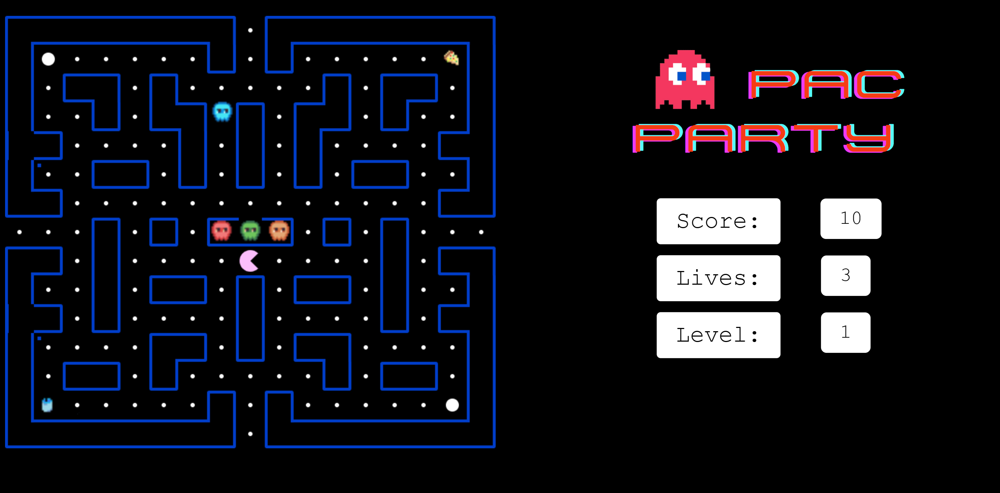
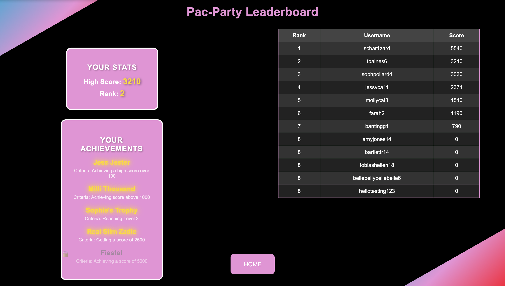

Welcome to Pac-Party! The competitive version of the original game. Below are the instructions, tips, and rulings to help you reach the top!
Byte is trying to collect all his food to achieve the trophies available. Avoid the ghosts and eat all the food to win!
There are also party treats to eat that will get the party going!
Use the following keys to navigate Byte through the maze:

Compare your scores against other users on the TOP 10 leaderboard, of which you can aim to party harder than them! These scores are their highest scores, so try to survive the blast as long as you can!
Throughout the game, when you get a new highscore, you have the opportunity to win achievements to reflect your progress, even try to get the top award!
